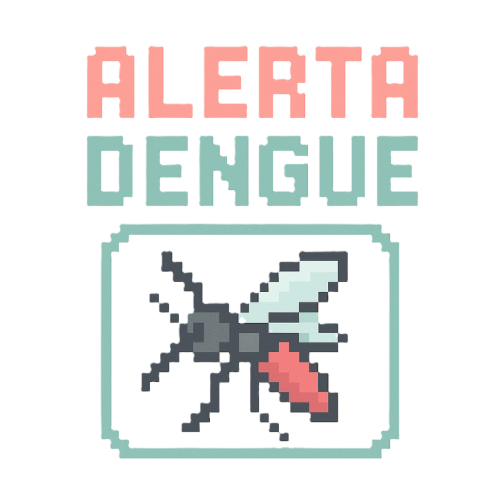

Sobre o Projeto
Com o objetivo de intensificar o combate ao mosquito Aedes aegypti e promover a conscientização da população, a Prefeitura Municipal de Lins lança o projeto "Alerta Dengue". Esta iniciativa visa oferecer à comunidade um canal direto para denunciar possíveis focos do mosquito transmissor da dengue, zika e chikungunya, além de ampliar o acesso a informações educativas e preventivas por meio de campanhas contínuas.
Através de ferramentas acessíveis e comunicação ativa, o "Alerta Dengue" busca engajar os moradores de Lins na luta contra a proliferação do mosquito, incentivando a participação cidadã e o cuidado com os espaços públicos e privados. O projeto também contará com ações informativas em escolas, unidades de saúde e redes sociais, promovendo uma mobilização coletiva em favor da saúde pública.
